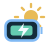

14 TAGE · SONNENSTUNDEN
· Open-Meteo · CC BY 4.0

SmartShunt und SmartSolar liefern die Werte. Watt’n’Pit bringt sie zusammen.
Kacheln verschieben, an der Ecke vergrößern oder über ··· anpassen. Überlappungen sind möglich.
· Open-Meteo · CC BY 4.0
Ohne eigenen Messwert ist die Leistung einzelner Solarkreise nicht separat sichtbar. Deine Solaranlage lässt sich in den Einstellungen anpassen.
DEINE DATEN BLEIBEN BEI DIR
Zwei Finger zum Zoomen. Ein Finger zum Verschieben. Antippen zeigt Messwerte. Lange Zeiträume bündeln Werte; die Schattierung zeigt Minimum und Maximum.
DIREKT PER BLUETOOTH
Ohne Geräteadressen, Verbindungsschlüssel oder Messwerte.
Archive werden beim App-Start automatisch ergänzt und mit vorhandenen Daten abgeglichen. VictronConnect dafür trennen. Android nutzt bestehende Kopplungen; bei neuen Geräten fragt es nach der Geräte-PIN.
Die Suche startet mit der Aufzeichnung.
Der Schlüssel ist je Gerät unterschiedlich. Er ist nicht die sechsstellige Bluetooth-PIN. Zum Empfang die aktive Geräteverbindung in VictronConnect verlassen.
PASST ZU DEINEM SETUP
Jede Kachel lässt sich durch Antippen anpassen. Unter „Anordnen“ kannst du sie frei verschieben und überlappen.
Für Sonne und Feierabend.
Fertige Farbdesigns für die ganze App. Eigene Kachelfarben bleiben erhalten.
14 Tage, je ein Wettersymbol und die erwarteten Sonnenstunden. Wähle deinen Ort; GPS wird dafür nicht benötigt.
Wetterdaten: Open-Meteo, CC BY 4.0 · Orte: GeoNames. Ortssuche und Wetterabruf nutzen Internet.
Hier beschreibst du deine Module und Regler. Die Angaben ändern keine Geräteparameter. Livewerte kommen weiterhin vom jeweiligen Messgerät.
Watt’n’Pit empfängt deine Geräte direkt. Messwerte und Geräteschlüssel bleiben auf diesem Telefon. Kein Konto, keine Werbung. Nur die optionale Ortssuche und Wettervorschau nutzen Internet: Suchtext bzw. Ortskoordinaten gehen an Open-Meteo. Energiedaten und Geräteschlüssel werden nicht übertragen.
Dein Energie-Cockpit.